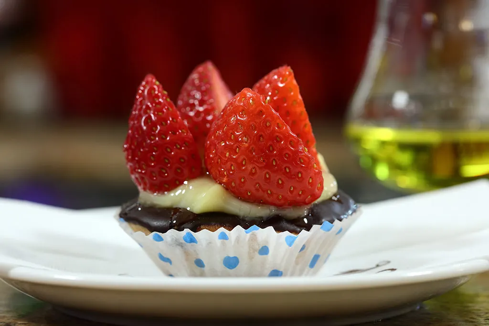

Festa della mamma: fragole, cioccolato e dolci fatti col cuore
Non esiste un dolce ufficiale per la festa della mamma. Ma qualche abbinamento che non sbaglia mai c'è.

La mamma non è una persona come tutte le altre. È pronta a correre in aiuto in ogni momento, telefona sempre (anche quando il figlio è ormai cresciuto), mette da parte l'ultima fetta di torta e prepara in anticipo il piatto preferito. Insomma, sulla mamma si può sempre contare.
Esistono tanti modi per dirle grazie nel giorno della sua festa, che in Italia cade la seconda domenica di maggio. Uno è preparare insieme a lei un dolce speciale, senza dimenticare l'ingrediente più importante: l'amore.
Il dolce ufficiale non esiste
A Natale il simbolo è il panettone, a Pasqua la colomba (e a Napoli la pastiera). Per la festa della mamma non c'è un dolce prestabilito: contano la cura e il gesto, più della ricetta. Ci sono però alcune preparazioni che per tradizione tornano ogni anno.
Fragole e cioccolato
A maggio le fragole sono di stagione, e l'accoppiata con il cioccolato mette d'accordo quasi tutti i palati, anche quelli delle mamme più severe. Bastano due ingredienti per ricette facili e veloci, come un tiramisù veloce o la classica crostata di fragole.
Per personalizzare la crostata si può tagliare la pasta frolla a forma di cuoricini, oppure ricoprire la superficie con delle formine e aggiungere uno strato di crema al cioccolato.
Piccole dolcezze
Altri classici da preparare per l'occasione sono i macarons in tutte le loro sfumature: quelli alla nocciola sono perfetti da servire con un tè caldo, chiacchierando. Per dei biscotti più semplici basta una frolla al burro e qualche stampino per decorarli con la forma che si preferisce.
Rose, rose e rose
Per la mamma romantica, il dolce giusto è la classica torta di rose oppure un fresco dessert con more e confettura di rose. Con i più piccoli in cucina, si possono fare le eleganti rose di sfoglia.
Se invece vuoi farle trovare qualcosa di già pronto, passa a trovarci: in vetrina ci sono la crostatina di fragole, i babà e le torte della casa, tutti di produzione propria. Auguri a tutte le mamme!